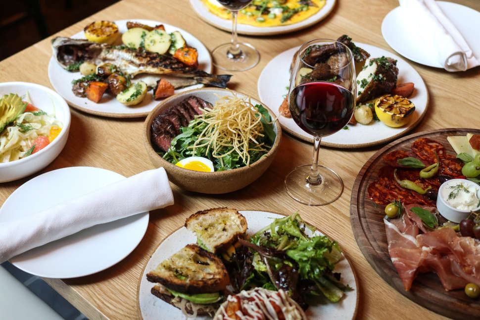

Lunch
Easy,delicious recipes using ingredients you'll most likely have at home

Potato Souffle

Ingredients
- 650g potatoes
- 1 onion (chopped)
- 50g butter
- 150g soft cheese
- 2 eggs (separated)
- 1 sprig rosemary (leaves plucked and chopped)
- 50g Parmesan
- Nutmeg for seasoning
For the garnish:
- a few whole rosemary leaves
Method:
- Boil the potatoes in salted water for 30 minutes. Drain, peel, mash and leave to cool slightly
- Heat the oven to 180 degrees celsius or gas 5<
- Fry the onion in butter until soft. Cool slightly
- Mix the egg yolks and chopped rosemary with the potatoes. Stir in the soft cheese, Parmesan, egg yolk and onions and fold carefully into the mixture.
Season with salt, pepper and nutmeg
- Pour the mixture into a buttered souffle dish and bake on the middle shelf until golden brown.
Garnish with rosemary leaves before serving.
One-pan spaghetti with nduja, fennel & olives

Ingredients
- 400g spaghetti
- 3 garlic cloves, very thinly sliced
- -½ fennel, halved and very thinly sliced
- 75g nduja or sobrasada paste
- 200g tomatoes, chopped into chunks
- 75g black olives, pitted and sliced
- 2 tsp tomato purée
- 3 tbsp olive oil, plus a drizzle
- 2 tsp red wine vinegar (optional)
- 40g pecorino, plus extra to serve
- handful basil, torn
Method:
- Boil the kettle. Put all the ingredients except the pecorino and basil in a wide saucepan or deep frying pan and season well.
Pour over 800ml kettle-hot water and bring to a simmer, using your tongs to ease the spaghetti under the liquid as it starts to soften
- Simmer, uncovered, for 10-12 mins, tossing the spaghetti through the liquid every so often until it is cooked and the sauce is reduced
and clinging to it. Add a splash more hot water if the sauce is too thick or does not cover the pasta while it cooks. Turn up the heat for the final
few mins to drive off the excess liquid, leaving you with a rich sauce. Stir through the pecorino and basil, and serve with an extra drizzle of oil
and pecorino on the side
Beetroot, hummus & crispy chickpea sub sandwich

Ingredients
- 300g pack cooked beetroot in water, drained, half sliced
- 400g can chickpeas, drained
- 3 tbsp vegan pesto
- olive oil
- splash of vinegar (white wine vinegar if you have it)
- 2 large ciabatta rolls, sliced in half
- 2 large handfuls mixed rocket, watercress & spinach salad
Method:
- Blitz the whole beetroot, ¾ of the chickpeas, 2 tbsp pesto and 1 tbsp oil in a food processor with some seasoning until you have a thick, smooth hummus.
Heat the ciabatta following the pack instructions
- Fry the remaining chickpeas in a little oil until crisp, then set aside. Toss the salad leaves with the remaining pesto and a splash of vinegar. Slice the
rolls, then assemble the sandwiches with the hummus, beetroot slices, salad leaves and fried chickpeas
{kind=link}
{kind=link}
{kind=link}
{kind=link}
{kind=link}
{kind=link}
{kind=link}
{kind=link}
{kind=link}
{kind=link}
{kind=link}
{kind=link}